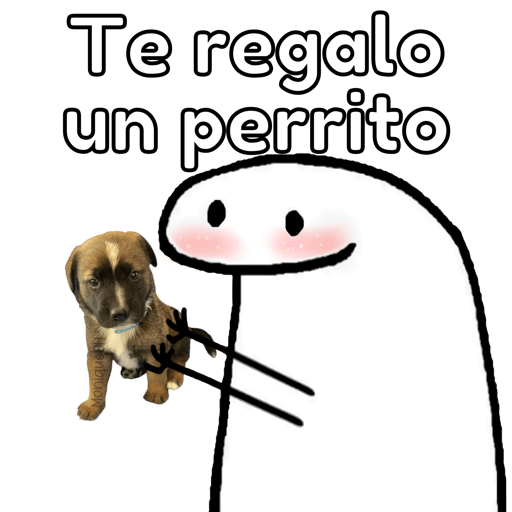

Razon #3.
En el transcurso de mi dia siempre te encuentro, sea en algo lindo que vi, una canción, en el cielo o hasta en un simple perrito. Por eso a veces te mandaba videos de gatos, perritos, atardeceres o de la luna, porque son cosas que siempre me recuerdan a ti y son simplemente hermosas. Creo que nunca lo entenderías, pero así es.
